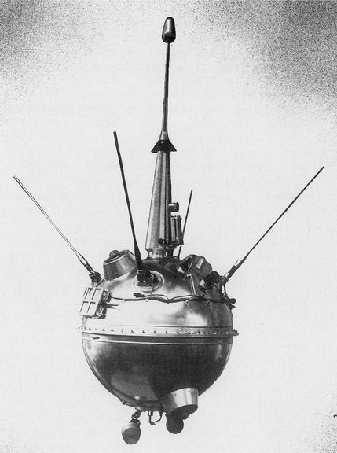
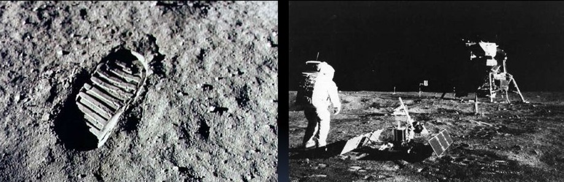

Дослідження Місяця
Великим кроком уперед став винахід Галілеєм телескопа 1609 року. Галілей вперше поглянув у телескоп на Місяць і побачив там цирки і кратери, гірські хребти і вершини, розгледівши в телескоп їхні тіні...

13 вересня 1959 зіткненням автоматичної станції Луна-2 з поверхнею нашого супутника. Так почалось дослідження Місяця космічними апаратами...


Це один маленький крок для людини, але гігантський стрибок для людства